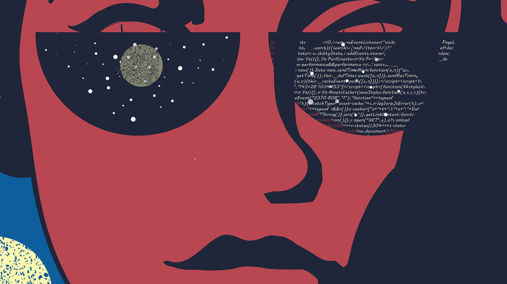

刚了解到“MarTech”这个名词，字面意思就是“营销＋技术”。被这个词吸引，大概是这两个名词刚好都落在了我的兴趣和能力圈范围内。目前的创业公司中，还可以实打实地用本土的平台和工具，来实践下这一理论。@SocialBeta:#营销世界的 5 大剧变# 全球 MarTech 领域的知名博主 Scott Brinker 在 2016 年 12 月发布了一系列的文章，主题是营销的五个剧变： ① 数字化转型 网页链接 ② 微服务和 API 网页链接 ③ 纵向竞争 网页链接 ④ 万物皆可数字化 网页链接 ⑤ 人工智能 网页链接